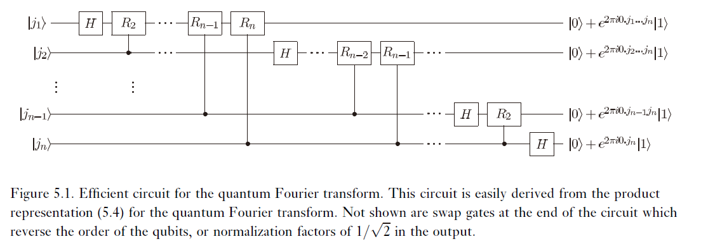
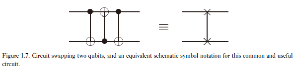
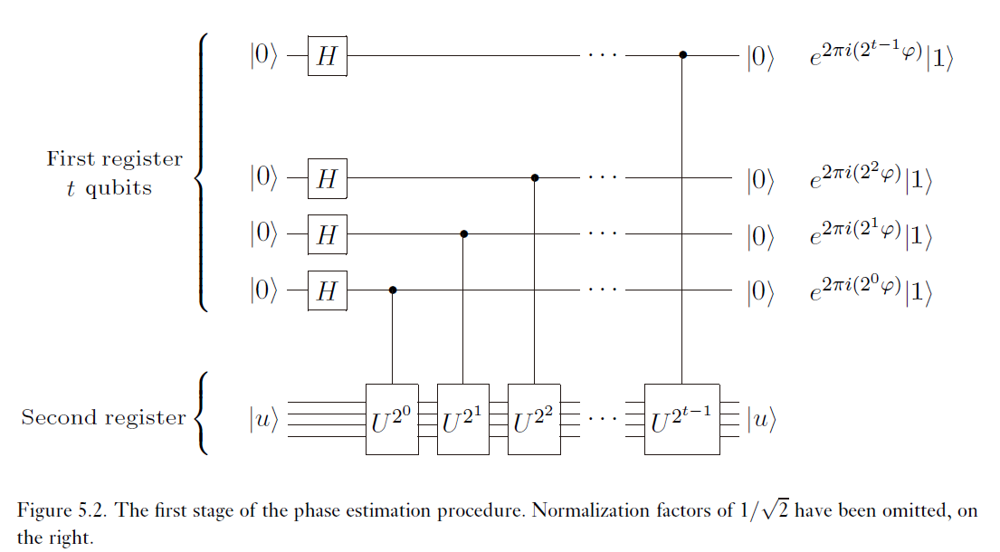
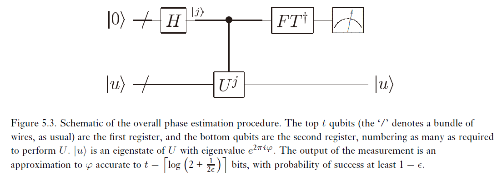
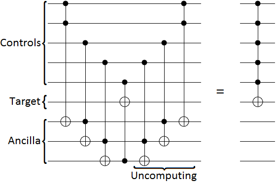

我常认为是丑女造就了美人，是愚氓举出了智者，是懦夫衬照了英雄，是众生渡化了佛祖。
量子Fourier变换及其应用
量子Fourier变换
量子Fourier变换定义为，在一组标准正交基$|0\rang,…,|N-1\rang$上的一个线性算子，在基态上的作用为：
等价地，对任意状态$\sum_{j=0}^{N-1}x_j|j\rang$，Fourier变换可以等价地写为：
其中幅度$y_k$是幅度$x_j$的离散Fourier变换值。实际上这个变换是一个酉变换。
下面取$N=2^n$，基$|0\rang,…,|2^n-1\rang$是一组计算基。二进制分解状态$|j\rang=|j_1…j_n\rang$，用记号“$0.j_lj_{l+1}…j_m$”表示二进制小数$j_{l+1}2^{-1}+…+j_m2^{m-l+1}$。
通过简单的代数运算，可给出量子Fourier变换有用的积形式：
这个积形式非常有用，甚至j可以把它作为Fourier变换的定义。这个表示允许我们构造有效计算量子Fourier变换的一个量子线路。
积形式与之前定义的等价性可以通过简单的代数运算得到：
其中倒数第二步实际上就是个拆括号，把张量积换成乘法就很好理解。
积形式给出了一个很好的线路。若$R_k=\begin{pmatrix}1&0\\0&e^{2\pi i/2^k}\end{pmatrix}$，输入状态为$|j_1…j_n\rang$，则下图线路即实现了Fourier变换：

简单解释下，Hadamard门应用到第一量子比特产生状态：
应用受控门$R_2$产生状态：
之所以是受控，因为$R_2$是一定会对$|1\rang$产生相移的。当且仅当$j_2=1$再运用$R_2$实际上就是相移了$e^{2\pi ij_2/2^2}$。以此类推，再应用$R_3,…R_n$就会产生状态：
然后运用交换量子比特线路（图中为了简洁没给出）：

即可得出最终需要的状态。
这也可以证明Fourier变换是酉的，因为线路中每个门都是酉的。
完成一个n个量子比特的Fourier变换需要的门数为
再加上交换须要的门（n线性个），故这个线路提供了一个Fourier变换的$\varTheta(n^2)$的算法。与之对照，计算$2^n$个元的离散Fourier变换最好的经典算法，例如FFT，复杂度为$\varTheta(2^nlog(2^n))$。这证明了量子计算的优越性。然而，实践中量子计算机的幅度不能通过测量直接访问，因此没办法确定Fourier变换后的幅度。更糟糕的是，一般没有制备待变换的原状态的有效办法。因此寻找量子Fourier变换的用途比我们希望的更微妙。
:::info
一个记号的说明
:::
- 首先对于一个函数$f:\Z_N\longmapsto \C$，满足$\sum_{x=0}^{N-1}|f(x)|^2=N$，++我们都可以用一个状态向量来表示这个函数信息++，即：所以而记$\hat{f}(x)=\sum_{l=0}^{N-1}e^{2\pi ilx/N}f(l)$，则有这就是默认记号的函数状态下的Fourier变换
相位估计
Fourier变换是称为相位估计（phase estimation）的一般过程的关键，而相位估计又是许多量子算法的关键。设酉算子$U$具有一个特征值为$e^{2\pi i\varphi}$的特征向量$|u\rang$，而$\varphi$的值是未知的。相位估计算法就是要估计$\varphi$。
量子相位估计使用两个寄存器。第一个寄存器包含初态都为$|0\rang$的t个量子比特。如何选择t和两件事有关：希望精确估计$\varphi$的精度和相位估计过程希望成功的概率。第二个寄存器初态为$|u\rang$，且包含储存$|u\rang$所需要数目的量子比特。
相位估计分三个阶段。首先，应用下图线路：

简单解释下。首先，图右侧省去了归一化常数$\frac{1}{\sqrt{2}}$，并且因为排版问题$|0\rang$和$e^{2\pi i\varphi}|1\rang$之间应该有加号，$U^{2^t}$表示$U$的$2^t$次幂。这个线路输出为什么是图中所示，注意到$|u\rang$是$U$的属于特征值$e^{2\pi i\varphi}$的一个特征向量。因此$U$作用于$|u\rang$实际上就是个相移。因此受控相移有等效线路作用到控制量子比特上，故得到该输出结果。
相位估计的第二阶段是应用逆Fourier变换到第一寄存器（可在$\varTheta(t^2)$个门内完成）。
相位估计的最后阶段是通过在计算基种测量读出第一寄存器的状态。
相位估计的全过程由下图线路给出：

下面来验证这个线路为什么可以实现相位估计的效果。我们并不关心$\varphi$的整数部分（因为$e^{2\pi i}$的整数次幂为1），不妨假设$\varphi$可以表示为t经典比特，即$\varphi=0.\varphi_1…\varphi_t$（$\varphi$当然可以是无穷多位的之后可以证明若$\varphi$是无穷位的这个方法也能给出一个不错的近似），则相位估计第一阶段第一寄存器的结果为（$2^{t-1}\varphi$的整数部分可以直接扔掉，因为幂次为1）：
相位估计第二阶段是应用逆Fourier变换，通过比较之前的Fourier变换积形式，我们发现上式和$|\varphi_1…\varphi_t\rang$的Fourier变换结果一样。于是逆Fourier变换，第一寄存器状态变为$|\varphi_1…\varphi_t\rang$。此时再对第一寄存器进行测量，则可以测出$(\varphi_1…\varphi_t)_2$，此时因为$\varphi$是精确有限位小数，则可以测出来。
但当$\varphi$是无穷位时怎么办？设$b$是$[0,2^t)$中的一个整数，使得$b/2^t=0.b_1…b_t$，且$b$为小于$\varphi$的所有数中$\varphi$的t比特最佳近似，即
$0\leq \varphi-b/2^t\leq 2^{-t}$。我们要证明相位估计最后的测量大概率（后面说明为什么是大概率）产生了一个接近b的结果，从而以很高的概率精确估计了$\varphi$。
第一寄存器输出结果为：
这个结果是一个叠加态，因此计算基测量结果一定是以不同概率得到不同的结果，实际上我们就在证明测量结果大概率离b很近。
对这个结果进行逆Fourier变换（即对每一个$|k\rang$逆Fourier变换），产生状态：
记$a_l$为$|l\rang$的幅度，则
记$\delta=\varphi-b/2^t\Rightarrow 0\leq\delta\leq2^{-t}$
这里需要理解清除一个东西。相位估计第三阶段对第一寄存器进行测量时，得到的结果显然不一定（以一定概率）得到b。记得到的结果是m，我们证明m和b偏离很远的概率很小。令$s=(b+l)mod2^t$，则$|s-b|>\epsilon\Leftrightarrow |l|>\epsilon$（注意b和l的范围，可以操作下取模）所以：
因为对任意实数，有$|1-e^{i\theta}|\leq 2$，所以有：
而因为$0\leq\delta\leq 2^{-t},0\leq l<2^t$，所以$2\pi (\delta-l/2^t)\in[-\pi,\pi]$。由不等式：$|1-e^{i\theta}|\geq 2|\theta|/\pi,\theta\in[-\pi,\pi]$：
因此:
又因为$0\leq2^t\delta\leq 1,l>1$，
事实上这和书上就差了些，不过不影响，而且我觉得书上写的很奇怪。因此
再重新回去考虑b的意义：b是一个t位二进制数，表示$\varphi$小数点后t位。如果我们想近似$\varphi$小数点后n位(n<t)，则可以令$\epsilon=2^{t-n}$（此时m和b的误差只在后t-n位，即m的前n位和$\varphi$的小数点后前n位一样）此时我们得到精确结果的概率高达$1-\frac{1}{2^{t-n+2}}$。如果追求概率更高，显然可以把t取大一点，即第一寄存器中的量子比特多一点。
跟书上不太一样，书上看不懂。但是结果之间量级一样差一点常数吧。
为了使用相位估算算法，需要制备U的本征态$|u\rang$。其实对于任意一个状态$|\psi\rang=\sum_u C_u|u\rang$，其中$|u\rang$是U特征值$e^{2\pi i\varphi_u}$对应的特征向量，则算法结果会大概率给出一个近似$\sum_uC_u|\tilde{\varphi_u}\rang|u\rang$的状态。其中二进制数$\tilde{\varphi_u}$是$\varphi_u$的一个很好的近似。
相位估计很好地解决了给出酉算子U和其一个特征向量，估计其对于特征值的问题。因为酉算子特征值模为1一定是$e^{i\theta}$形式。
相位估计应用
求阶
对于满足x<N，且无公因子的正整数x和N，x模N的阶定义为最小正整数r，使得$x^r\equiv1(modeN)$。记$L=log(N)$（即N的二进制位数，表示N需要的经典比特数），在经典计算机上找不到一个关于L多项式复杂度的算法。然而却有一个有效的量子算法。
求阶的量子算法恰好是把相位估计算法应用到酉算子
其中，$y=\{0,1\}\times\{0,1\}\times…=\{0,1\}^L$。考虑状态：
其实这个状态是U的本征态，因为($x^r=1modN$)：
注意到上面的讨论$|u_s\rang\in Span\{|0\rang,…,|N-1\rang\}$。为了方便，把U补全为$2^L\times 2^L$，即当$N\leq y\leq 2^L-1$时，$U|y\rang=|y\rang$。即U只有作用在子空间$Span\{|0\rang,…,|N-1\rang\}$上时是不平凡的。
利用相位估计，使我们以高精度得到对应的特征值$e^{(2\pi is/r)}$，再花一点功夫就可以得到阶r。
引用相位估计过程由两个重要要求：
- 必须有对任意整数k实现受控$U^{2^j}$操作的有效过程
- 必须能够有效制备具有不平凡特征值的特征向量$|u_s\rang$或至少是这些特征向量的叠加。
第一个要求可以用称为求模幂（modular expoentiation）的过程来满足，用这个过程我们能够实现整个受控$U^{2^j}$运算的序列，以应用到用$O(L^3)$个门的相位估计过程。
求模幂：
我们希望计算变换：
所以一系列受控$U^{2^j}$实际上就等价于用一个求模幂乘以第二寄存器的内容，其中z是第一寄存器的内容。
此时我们的想法是先引入第三计算器计算$|x^zmodN\rang$（因为去除y之后方便使用快速幂），再把他乘进第二寄存器，再用退计算（uncomputation）把第三寄存器抹除。
首先引入第三寄存器初始状态$|x\rang|1\rang$，考虑下怎么处理状态相乘，即实现$|a\rang|b\rang\rightarrow|a\rang|a\cdot b\rang$。实际上可以使用小学时期就学过的按位乘法（只不过是按二进制位乘法）就可以很好的解决这个问题，复杂度就是$O(log(a)log(b))$在这题中就是$O(log^2(x))$。
具体实现也需要考虑下第三寄存器里乘法的实现，应该需要引入一些辅助量子比特，但应该是$O(log(x))$级别的，同样最后需要的门数是$O(log^3(x))$的（每次乘法是平方，做t次）。
然后把第三寄存器得出的$x^zmodN$乘到第二寄存器，再用退计算(uncomputation)的技巧抹除第三寄存器内容。

但实际实现过程还需要很多细节的考虑。总之显然这通过引入不多的量子比特和计算门就是可以实现的（$O(log^3(x))$）。
实践中，练习给出了我认为更好的一个做法。把第二寄存器初始化为$|0\rang$，然后把$U^j:U^j|x\rang=|x^jmodN\rang$替换为算子V：
这样操作得出的输出结果是一样的，复杂度也没变，V也很好构造出来。但是感觉实现起来少了些细节吧不知道（x。
第二个要求需要一定技巧，因为在制备$|u_s\rang$时我们根本不知道r，所以不能直接制备。其实：
所以如果第二寄存器的输入为$|0…01\rang$的话，第一寄存器的操作为：
此时对第二寄存器基于基$|u_0\rang,…|u_{r-1}\rang$的投影测量，每个结果$s_0\in[0,r-1]$均以概率$1/r$得到，得到后第一寄存器状态即会坍塌进入$|\varphi_{s_01}…\varphi_{s_0t}\rang$，因此无论测出结果是几，都可以估计出$s_0/r$的值。
到这里仍未结束，因为我们需要解决知道有理数$\varphi\approx s/r$（近似到$O(L)$位），和s，怎么得到r？此时需要连分式算法：
连分式算法的思想是只用整数把实数描述为如下形式：
其中$[a_0,…,a_m]$称为第m个渐进值。若$\varphi$是无理数则$M=\infin$。
这个算法很简单，以$\frac{31}{13}$为例，实际上就是拆开整数和真分数，把真分数倒过来，再重复。
复杂度的话实际上这个算法需要$O(L)$的翻转和拆开，每个翻转和拆开又需要$O(L^2)$个基本算术门，所以纵谷需要$O(L^3)$个门即可实现。
定理：设有理数$s/r$是任一个使得$|\frac{s}{r}-\varphi|\leq\frac{1}{2r^2}$的有理数，则$s/r$是$\varphi$连分式的一个渐进值。
通过此定理可以通过用连分式算法拆解$\varphi$的渐进值，且每拆分一次都可以考虑下拆分出来的渐进分数的分母带入到$x^r=1(modN)$验证，若等式成立了则求阶任务就完成了。
++实际上给出分母$r$的上界$L$，然后把$\varphi$近似到$2L+1$位，则真实值$s/r$与$\varphi$的误差$|s/r-\varphi|\leq2^{-2L-1}\leq1/2r^2$，所以真实值肯定为渐进值的一个近似值，即一定可以得出结果。分子分母都能的出来。++
然而求阶算法还可能面临失败。首先，相位估计的结果可能给出$s/r$的一个很糟糕的估计，不过这也的概率不大，也可以通过增加线路规模来减小。其次，s和r可能有公因子（但连分式分解出来的r‘一定和s互质）。这时连分式算法返回的$r’$会是$r$的一个因子，而非r本身。这个问题有三种解决办法：
- 注意到测量得到$s_0\in[0,r-1]$时概率是均等的。而小于r的素数至少为$r/2logr$个，因此$s_0$为质数的概率是$1/2logr$。故重复相位估计算法$2log(N)$次，将会以很高的概率得到相位$\varphi\approx s/r$使得$s/r$互质。
- 直接说比较好的方法。重复相位估计两次，分别得到$s_1,s_2$，然后连分式得到的对应r为$r_1,r_2$。我们取r为$r_1,r_2$的最小公倍数。此时正确的概率很高，因为$s_1,s_2$没有公因子的概率为$1-\sum_qp(q|s_1)p(q|s_2)$，其中竖线为可以整除的意思。然后由于s是从0,…,r-1中均匀随机选一个，所以$p(q|s_1)\leq1/q$。所以$s_1,s_2$没有公因子的概率$\geq 1-\sum_q1/q^2$。通过数论知识可以得到这个概率$\geq\frac{1}{4}$，即r正确的概率至少为$\frac{1}{4}$。（这很高吗？。。。
事实上求阶问题量子算法规模在$O(log^3(N))$。
量子Fourier变换的一般应用
离散对数问题
:::default
给定a和$b=a^s$，s是多少？
:::
问题的转化
实际上我们可以考虑一个函数$f(x_1,x_2)=abmodN=a^{sx_1+x_2}modN$，这个函数很好构造而且是周期的，因为$f(x_1+l,x_2-ls)=f(x_1,x_2)$，而周期是二元的$(l,-ls)$。实际上我们就想求这个s。而r为满足$a^r=1(modN)$的最小正整数，显然f也有一维周期：$f(x_1+r,x_2)=f(x_1,x_2)=f(x_1,x_2+r)$，++这个一维周期保证了下面的约等号成立++。
然后可以类似之前求周期的经验：
然后引入状态：
则
实际上，最后一个等式需要借用$\hat{f}$的周期性，以及$l_1,l_2<r$，用一点数学证明（Ex5.22），不过这有一点点复杂。
然后系统状态为：
然后直接对前两个寄存器应用逆Fourier变换：
然后对前两个寄存器测量，得出$\frac{sl_{20}}{r},\frac{l_{20}}{r}$。
然后应用一个推广连分式算法，可以分别同时对他们做连分式，当同时得到r时，将两个连分式的渐进值相除，即可得出s。
Simon’s Algorithm
:::default
给定一个函数$f:\{0,1\}^n\longmapsto \{0,1\}^m,m\geq n$，满足$f(x)=f(y)\Leftrightarrow y=x\oplus s$，其中$\oplus$为异或符号。现给出一个可以实现f的黑箱，求s的值。
:::
首先制备一个两寄存器初态$|0\rang|0\rang$，第一寄存器n量子比特，第二寄存器m量子比特。
利用$H^{\otimes n}$制造叠加态$\rightarrow \frac{1}{2^{n/2}}\sum_{x\in\{0,1\}^n}|x\rang|0\rang$
应用f的黑箱$\rightarrow \frac{1}{2^{n/2}}\sum_{x\in\{0,1\}^n}|x\rang|f(x)\rang$
对第二寄存器进行测量，得到结果$f(x_0)$。而对应$f(x_0)$的$x$至多有两个，因此系统状态坍塌进入:
此时扔掉第二寄存器，对第一寄存器继续应用算子$H^{\otimes n}=\frac{1}{\sqrt{2^n}}\sum_{x,y\in\{0,1\}^n}(-1)^{x\cdot y}|x\rang\lang y|$：
而$(-1)^{(a\oplus b)\cdot c}=(-1)^{a\cdot c}\times (-1)^{b\cdot c}$因为我们按位考虑，两数点乘实际上就是两数对应位都为1的位数，
然后所以只用考虑c为1的位。然后a和b对应位都为0的话，相当于点乘结果没变；a和b对应位都为1的话，相当于点乘结果+2，然后反应在(-1)的指数上相当于也没变。只有a和b对应位不同，相当于点乘结果+1，算式结果要乘上(-1)。因此不难验证式子成立
然后我们对第一寄存器测量，显然如果有结果（例如$x=a$）的时候一定满足$s\cdot a=0(mod2)$，这实际上就揭示了s的一些信息。
我们一直重复整个过程n-1次。然后就会得到n-1个线性方程：
当$a_1,a_2,…,a_{n-1}$线性无关（相对于异或）时，因为上面数字的特殊性（只有0和1两种情况），可以解出两组解，而且一组解一定为0解（可以构造这样一组方程组解试试就明白了），而另一组非平凡解就是我们要的结果。
但是我们究竟有多大概率重复n-1次就获得n-1个线性无关的方程？
| | 得到如下结果就失败了 | 失败的概率 | 成功的概率 |
| ————- | ——————————————————- | ————————————- | —————————————- |
| $a_1$ | 0 | $\frac{1}{2^{n-1}}$ | $1-\frac{1}{2^{n-1}}$ |
| $a_2$ | $0,a_1$ | $\frac{2}{2^{n-1}}$ | $1-\frac{2}{2^{n-1}}$ |
| … | … | … | … |
| $a_{n-1}$ | $0,a_1,…,a_{n-2},a_1\oplus a_2,…$ | $\frac{2^{n-2}}{2^{n-1}}$ | $1-\frac{2^{n-2}}{2^{n-1}}$ |因此，最后成功的概率是最右面一列乘起来，当n趋近于无穷时，成功概率下界为$\approx 0.288>\frac{1}{4}$
所以重复n-1次至少有1/4的概率就能得出s。
++事实上，$\Z_2$上的Quantum Fourier Transform就是$H^{\otimes n}$++
Period-finding(Simon’s algorithm over $\Z_N$)
:::default
给定一个量子酉门$Q_F$，它可以实现函数$F:\Z_N\longmapsto \{0,1\}^m,N=2^n,m\geq n$（实际上$\Z_N=\{0,1\}^n$），然后已知这个函数满足$F(x)=F(y)\Leftrightarrow F(x+L)=F(y)$，实际上因为这里的$+$是$+(modN)$，所以只有$L|N$时这个条件才有可能被满足。求$L$。
:::
需知的定理
:::info
Fourier变换的移不变性质
:::
Fourier变换更一般的定义为：
H是G的某个子集，G是Hilbert空间标准正交基状态的指标集，例如对n量子比特系统，G就可以是0到$2^n-1$的数的集合。
设我们有个酉算子$U_k$，它进行的运算为：$U_k|x\rang=|x+k\rang$，把它作用于$\sum_{h\in H}a_h|h\rang$，然后再进行Fourier变换：
不管k是几，$|g\rang$对应的概率幅度都不会变，即$|\tilde{a_g}’|=|e^{2\pi igk/|G|}\tilde{a_g}|=|\tilde{a_g}|$。
以群论的语言说，G是一个群，H是G的一个子群。如果一个G上的函数f在H的陪集上是定常的，那么我们说f的Fourier变换在H的陪集上是不变的。（注这里陪集运算是加法，$[a]=a+H$）
算法过程
首先制备初态$|0^{\otimes n}\rang|0^{\otimes m}\rang$
应用$H^{\otimes n}$到第一寄存器生成叠加态$\rightarrow\frac{1}{2^{n/2}}\sum_{x=0}^{2^t-1}|x\rang|0^{\otimes m}\rang$
应用$Q_F:\rightarrow\frac{1}{2^{n/2}}\sum_{x=0}^{2^t-1}|x\rang|f(x)\rang$
对第二寄存器观测，假设得到结果为$C^$，则系统坍塌进入$\rightarrow\sqrt{\frac{L}{2^{n}}}\sum_{x,f(x)=C^}|x\rang|C^*\rang$，记
则第一寄存器状态为状态为$|g_{C^*}\rang$
对第一寄存器应用Fourier变换：
++其中，由于Fourier变换的移不变性质，概率$|\hat{g}_{C^}(s)|^2$是不依赖于$C^$的。++，或言之：
显然$e^{2\pi xx_0/N}$只是个全局相位不影响测量。
所以
其中$\phi=e^{2\pi ix_0x/N}$是个不影响测量的全局相位。
然后我们可以对第一寄存器进行测量。测出来的结果是一个随机的$k\frac{N}{L},k\in\{0,1,2,…,L-1\}$
我们重复这个过程两次，然后测出$k_1\frac{N}{L},k_2\frac{N}{L}$，再去最大公因数。实际上，$gcd(k_1,k_2)=1$的概率$\geq 25\%$
因此我们重复两遍就可以很大概率得出$\frac{N}{L}$，然后再用N去除就可以得到L了
补充说明
显然，我们遇到的问题往往不能保证$N=2^n$和$L|N$，即加法并不需要循环。
当$N\neq 2^n$时，我们可以补充定义$f(x)=-1,N\leq x<2^n$，其中$-1$为一个在$f(0)$~$f(N-1)$中没出现过的数。那么对第二寄存器测量时，如果出现$-1$，就重复过程。这样的话其他操作不变显然也可以实现要求。
当$L$不整除$N$时，我们进行上述算法过程仍然以$\geq 0.4/L$的概率得到一个离$k\frac{N}{L}$最近的整数。下面我们证明这个命题
在之前，
但是由于$L$不整除$N$，$C^*$出现的次数不再是$\frac{N}{L}$，而是$\lfloor \frac{N}{L}\rfloor$或$\lceil\frac{N}{L}\rceil$，记它出现次数为$M$。则
所以对$\frac{1}{\sqrt{N}}\sum \hat{g}_0(x)|x\rang$测量，测出的结果x有可能不为M的倍数。（即原本应该概率为0的部分概率不再为0，而是一个很接近0的数）
那么测出$M$的倍数的概率究竟有多少呢？精确写下$\hat{g}_0(x)$：
则读出$kM$的概率为：
中间取模里实际上是对单位根的一个平均值。所以实际上，读出某个最接近$kM$的结果概率大于等于$0.4/L$。
然后整出一个离$k\frac{N}{L}$最近的整数后，考虑其位数和除以N之后可以用连分式大概率解决出L。
所以事实上，在算法开始前我们是需要知道$L$的上界的。（即使不给也应该进行一个猜测）。然后把第一寄存器的量子数$n$取$n=2logN+2+log\frac{10}{\epsilon}$或者更大就可以得出L。
Factoring: Shor’s Algorithm
:::default
给定一个大数$B=PQ$，其中P和Q都是质数，求P或Q。
:::
问题的转化
实际上，我们需要找的就是一个非平凡的平方根R：$R^2=1(mod B),R\neq\pm 1(mod B)$。
如果找到了这个R，则有$PQ|(R-1)(R+1)$，又因为$P,Q$不可能同时整除$R-1$或$R+1$(因为此时$R=\pm 1(modB=PQ)$)，所以其实一定是$P|(R-1),Q|(R+1)$，因此再取$gcd(B,R-1),gcd(B,R+1)$就可以得出P和Q。
算法过程分析
首先，随机选取一个$[1,B-1]$的数$A$，若$gcd(A,B)\neq 1$，则直接返回$gcd(A,B)$。
这里补充说明一个符号：$\Z_N^*=\{A|0\leq A<B,gcd(A,B)=1\}=\{A|0\leq A<B,A^{-1} exists\}$
然后需要进行一个数学上的说明。以下值是不同的：
其中，r是A mod B的阶。因为若$A^i=A^j(modB)$，则因为A与B互质，因此$A^{-1}$存在，因此$A^{i-j}=1(modB)$，违反了r是最小满足条件的阶的定义。
实际上，我们需要求出A mod B的阶r，然后需要一点运气：++如果r是偶数，且$A^{r/2}\neq -1(modB)$++（$A^{r/2}$不可能模B为1，因为r是最小满足模B为1的指数），则我们令$R=A^{r/2}$就很好。
实际上，求出的阶满足上面要求的概率$\geq 50\%$
求阶问题实际上就可以利用之前的Period-finding，即$f:\N\longmapsto [0,B-1],f(x)=A^x(modB),f(y)=f(x)\Leftrightarrow r|y-x$。
在实际操作中，显然$A^x$的指数x并不能对所有自然数实现，而实现f的黑盒实际上也就帮助我们实现$f(0)$~$f(2^n-1)$。而且$r$可能不整除$2^n$。但这都不影响我们利用Period-finding得出r。
隐含子群问题（Hidden Subgroup Problem）
:::default
给定一个群G和一个函数$f$，其中$f$定义为$f:G\longmapsto X$（我们不关心f的值域，所以X不是很重要），然后假定$f$满足++$f$在G的某个子群H上是定常的，而且在不同陪集上值不同++，即$f(x)=f(y)\Leftrightarrow x-y\in H$。给一个实现$f$的黑盒，求H的生成集。
:::
研究HSP的意义
:::info
实际上，求周期，求阶，离散对数，求因子本质都是HSP
:::
| 名称 | G | X | H | 函数f |
|---|---|---|---|---|
| 求周期 | $(Z,+)$ | 任意有限集 | $\{0,r,2r,…\},r\in G$ | $f(x+r)=f(r)$ |
| 求阶 | $(Z,+)$ | $\{a^j\},j\in Z_r,a^r=1$ | $\{0,r,2r,…\},r\in G$ | $f(x)=a^x$ |
| 离散对数 | $(Z_r\times Z_r,+(modr))$ | $\{a^j\},j\in Z_r,a^r=1$ | $\{(l,-ls)\},l,s\in Z_r$ | $f(x_1,x_2)=a^{kx_1+x_2}$ |
其实考虑下发现，HSP就是这些问题的群论综述。
解决方案
在具体问题的解决中，我们寻找到了一般的解决方案：
整个初态$|o^{\otimes n}\rang|0^{\otimes m}\rang$
利用Hadamard门整个叠加态：$\rightarrow\frac{1}{\sqrt{|G|}}\sum_{x\in G}|x\rang|0\rang$
利用f黑盒：$\rightarrow\frac{1}{\sqrt{|G|}}\sum_{x\in G}|x\rang|f(x)\rang$
测量第二寄存器，假设测得结果$C^$，系统第一寄存器坍塌进入状态$\rightarrow\frac{1}{\sqrt{|H|}}\sum_{x\in x_0H}|x\rang$其中$f(x_0)=C^$。于是我们可以定义一个函数：
显然它满足$\sum|g_{C^}(x)|^2=|G|$，（$g_{C^}(x)$不为0的共有$|H|$）则系统第一寄存器状态为$\frac{1}{\sqrt{|H|}}\sum_{x\in x_0H}|x\rang=|g_{C^*}\rang$
然后考虑$|g_{C^*}\rang$的Fourier变换：
然后这时候，如果类似Period-finding，$H=\{0,r,2r,..\}$，则：
此时我们对$|\hat{g}\rang=\sum \hat{g}(x)|x\rang$进行测量，就会随机得出一个$k|H|$，它实际上反映了$H$的一些信息。
在之前的Period-finding的例子，$H$的生成元r满足$|G|/|H|=r$，因此得出$|H|$我们就能得出r。
但如果$G,H$是更抽象的群，或者生成元之类的不止一个，实际上考虑本质，我们测出的$x$一定是（或大概率）满足：
$0\neq|\hat{g}_{C^*}(x)|^2=\frac{G}{H}\sum_{y\in H}e^{2\pi ixy/|G|}|^2=\frac{|G|}{|H|}|\sum_{y\in H}e^{2\pi ixy/|G|}|^2$
就是要求$|\sum_{y\in H}e^{2\pi ixy/|G|}|^2\neq 0$（在Period-finding里，$\sum_{y\in H}e^{2\pi ixy/|G|}\neq 0\Leftrightarrow x=k|H|$）
数学事实：
所以如果H是个循环群，$H=\{0,r,2r,…\}$，有
所以每当我们测出了一个$x=k|H|$，就会获得一个透露H信息的方程。
补充说明
然而，这些方程和有很多时候并没有什么用。
之前的具体问题都嫩顺利解决一大重点在于$|G|$的因子很少，$|G|$和r互质概率很大。所以我们大概率可以用连分式等数论方法去获得$|H|$。
然而若$|G|$是个有很多因子的合数，这就比较困难。
有限Abel群结构定理（Fundamental Theorem of Finite Abelian Groups）
任意有限Abel群都同构于一系列素幂阶循环群的直积
这个定理不证明，但可以举个例子。例如：
其中
建立同构映射：
不难验证，这是个一一映射且保持运算$4+5=f((0,2)+(1,1))=f((1,0))=3$
其实不难发现，考虑有限剩余系$\Z_N$，可以把$N$素因子分解，然后$\Z_N\cong\Z_{p_1^{\alpha_1}}\times…\times\Z_{p_m^{\alpha_m}}$，同构映射为：
然后G的HSP问题实际上可以分解成子群的HSP。以剩余系为例我们可以给出一个例子，譬如:
然后一个函数g定义在$\Z_{12}$上满足$g(x)=g(y)\Leftrightarrow x-y|6$，即周期为6。那么我们怎么分解这个问题得到6呢？首先，写出映射关系：
| $x_1\in\Z_3$ | $x_2\in\Z_4$ | $4x_1+3x_2\in\Z_{12}$ | $g(4x_1+3x_2)$ |
| —————— | —————— | ——————————- | ——————— |
| 0 | 0 | 0 | R |
| 0 | 1 | 3 | G |
| 0 | 2 | 6 | R |
| 0 | 3 | 9 | G |
| 1 | 0 | 4 | B |
| 1 | 1 | 7 | H |
| 1 | 2 | 10 | B |
| 1 | 3 | 13=1 | H |
| 2 | 0 | 8 | T |
| 2 | 1 | 11 | X |
| 2 | 2 | 14=2 | T |
| 2 | 3 | 17=5 | X |显然，以上映射关系以及g都满足条件。
然后我们考虑构造一个在$\Z_4$上的函数$g_{\Z_4}$。它的取值是怎样的呢？实际上，$\Z_4$里的元素只有0,1,2,3，我们可以令$g_{\Z_4}(x)=g(3x+4c)$，$c$是个常数，并不影响结果。
譬如我们可以取$c=0$，则$g_{\Z_4}(0,1,2,3)=R,G,R,G$，或者取$c=1$，则$g_{\Z_4}(0,1,2,3)=B,H,B,H$。
++其实就是把其他群元素固定，只改变$\Z_4$中的元素的话，得出的周期不会受到影响，只有函数具体取值有影响。++
然后我们对这样的$\Z_4,g_{\Z_4}(x)$求HSP，显然其陪集$H_{\Z_4}=\{0,2\}$，生成元（周期）为2。
然后对$\Z_3$同样构造函数和求HSP，可以得出其周期为0。
因此$\Z_{12},g$对应的生成元就是$f(0,2)=40+32=6$，就求出来了。即同构映射保持了生成元。
以上只是一个具体例子，但从中可以理解如何分解HSP到子群上。
然而分解G也不是一件容易的事情，还好我们有shor’s algorithm分解大合数。然后同构映射也是随着素因子分解结果直接得出的。